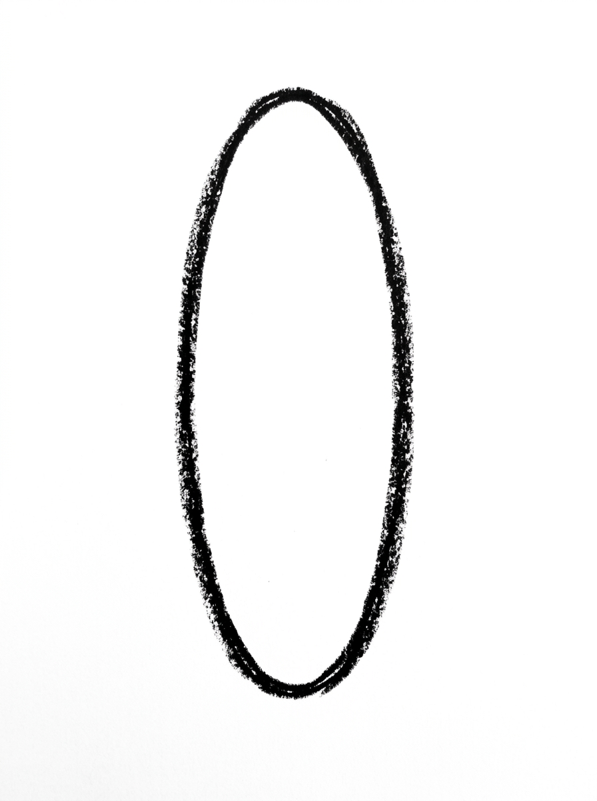
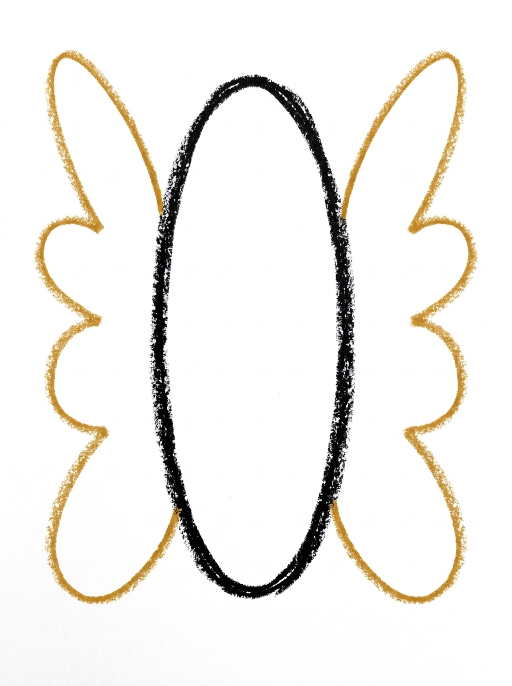
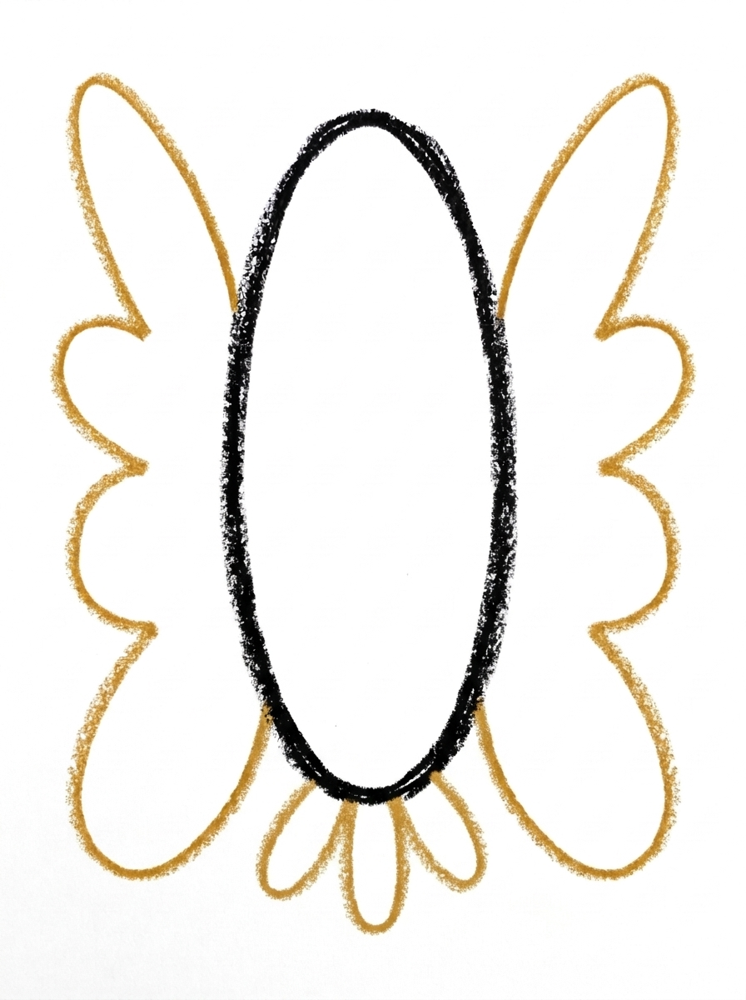
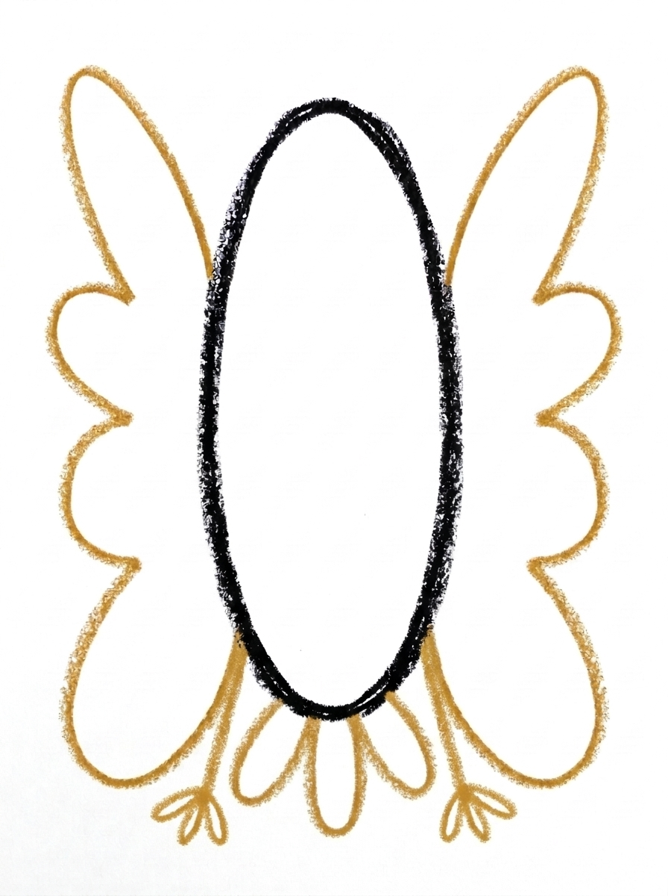
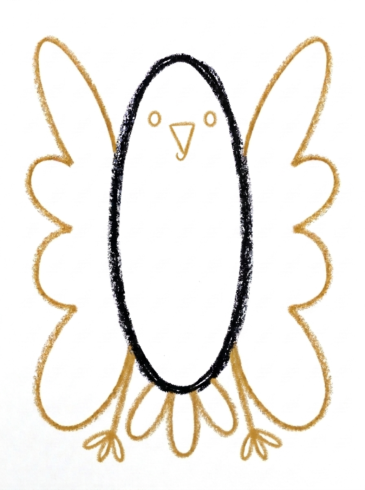

Eagle Drawing for Kids How to Draw An Eagle in 6 Easy Steps
Quick Answer
Draw an eagle with one tall standing oval for the body — its top becomes the head — one big wavy-edged wing on each side, three tail feathers below, a small three-toed foot on each side, then dot eyes and a hooked triangle beak. Made for ages 3 and up — no signup needed, just print and draw.
At a Glance
- Subject: How to draw an eagle
- Ages: 3+
- Steps: 6 steps
- Time: ~15 min
- Difficulty: Easy
- Supplies: Paper, crayons
This eagle faces you with its wings spread wide, and it starts from a single tall oval — there is no separate head to draw, because the top of the body becomes the head at the coloring step. The big matching wings are what make it read as a mighty eagle instead of a little bird.
✏️ Draw Your Eagle in 6 Easy Steps
One step per box — this step by step eagle drawing shows each new part in a different color so kids can see exactly what changed.
Step 1: The Body

Draw one tall oval standing up in the middle of your paper. This is your eagle's body — the top of it will be the head.
Step 2: The Wings

Draw one big wing shape on each side of the body. Start at the top side of the body, curve out and down, and give the bottom edge a wavy line.
Step 3: The Tail

Draw three long rounded feathers fanning out below the body, each one touching the bottom of the body. This is the eagle's tail.
Step 4: The Feet

Draw one small foot at the bottom of the body on each side of the tail, each foot made of three short toe lines.
Step 5: The Face

Draw the face at the top of the body: one round dot eye on each side, and one small triangle beak in the middle pointing down, with a tiny hook at its tip.
Step 6: Color It In

Color your eagle! White for the head (the top of the body), dark brown for the rest of the body and the tail, dark brown for the wings with lighter brown inside, yellow for the beak and feet, and black for the eyes. Great drawing!
📊 Eagle Drawing by Age
Every age can join in — just adjust the job.
| Age | What they can do | Tip |
|---|---|---|
| 3-4 | Draw the tall body oval and one big wing shape on each side, with the tail feathers as three rounded bumps below. | Make the wings big — wider and taller feels wrong to adults but reads perfectly as an eagle to everyone. |
| 4-5 | Draw the oval, both matching wings with wavy bottom edges, and the three tail feathers in order. | Draw one wing, then copy it on the other side like a mirror image — matching wings are the whole trick of this drawing. |
| 6+ | Draw the full eagle alone, including the three-toed feet and the hooked beak, and add a perch or mountains. | Let them add a branch under the feet or a cliff and sky behind it to finish the scene. |
🖨️ Download Your Free Eagle Drawing Printable
The printable lays out all 6 steps one per box, big enough for little hands — kids draw right alongside each step.
⬇️ Open Free Printable 🖨️ Print🎁 Free printable for ages 3+
🦅 Eagle Lookout Scene
Give your eagle somewhere majestic to be. Draw a thick branch under its feet, or a rocky cliff edge, then mountains and a big sun behind it — and count the details together: three tail feathers, three toes on each foot, two wings, two eyes, one hooked beak. For a real challenge, fold a spare sheet in half, draw one wing on the fold, and open it to plan how the matching wing should look before drawing the real thing. Older kids can attempt a flying version with both wings swept up.
What You'll Need to Draw An Eagle
You need paper, a pencil and crayons or markers: dark brown for the body, wings and tail, a lighter brown for inside the wings, yellow for the beak and feet, and black for the eyes. The head stays white — either leave it as bare paper or use a white crayon — so no special supplies are required for the most important color of all.
What They're Learning
This tutorial teaches symmetry in its clearest form: two big wings that must mirror each other, wave for wave along their bottom edges. It also practices a wavy line (the feathered wing edge), counting with meaning — three tail feathers and three toes on each foot — and a planning idea new to most kids: part of the drawing, the white head, only appears at the coloring stage, so they learn to picture the finished piece while the outline still looks plain.
Make It Yours
Color the whole head brown and the same outline becomes a golden eagle. Perch the eagle on a drawn branch or cliff, give it a mountain range and sun to fly over, or draw a small eaglet in a nest of scribbled twigs beneath it. A night version — dark blue sky, yellow stars, the eagle left pale — looks striking, and older kids enjoy adding a shield or flag colors behind it for a patriotic poster.
🛒 Our Favorite Drawing Supplies
These are the supplies we reach for in our own home — washable (because kids), quality paper, and enough colors to avoid fights.
As an Amazon Associate, MomYouNeedThis earns from qualifying purchases — at no extra cost to you.
💡 Eagle Drawing Tips for Parents
The wings are this drawing's signature, and they work when they match. Have your child draw the first wing completely, then build the second as its mirror: start at the same height on the body, curve out to about the same width, and count the waves along the bottom edge so both sides get the same number. Also go big — wings wider than the body feels exaggerated, but eagles are mostly wing, and undersized wings are what turn eagles into pigeons.
Watch the feet in Step 4: one small foot on each side of the tail, sitting below the body — not on the wings and not on the tail feathers. Three short toe lines per foot is all they are. And when Step 5 arrives, keep the beak small and hooked at the tip; a big straight triangle reads as a duck's bill, while the little downward hook is pure eagle.
✏️ Eagle Drawing Step by Step
This eagle drawing skips the hardest part of most bird drawings: there is no head to construct. One tall oval stands in for the whole bird, its top becomes the head, and wings, tail, feet and face all attach to that single shape.
That puts unusual weight on the last two steps. The face in Step 5 is drawn at the top of the oval — an eye on each side, the small beak in the middle — and those marks are not just decoration: they stake out the head’s territory before any colour arrives.
Step 6 then creates the head out of colour alone. The top of the oval stays white, everything below it goes dark brown, and the boundary between them is wherever the colour decides to stop — there is no outline line to follow. Keep the white to the top section, around the face, and the bald eagle appears; run it halfway down the body and the bird’s proportions go with it.
See free eagle printable for more.
✏️ One Shape Per Step, Six Steps Total
Check this eagle drawing from the bottom up. The tail should be three separate long rounded feathers, each one touching the bottom of the body and fanning below it — fewer than three, or feathers that float clear of the body, and the tail has missed its step.
Face check at the top of the oval: one dot eye on each side, and the beak in the middle between them, pointing down. An eye count of one, or a beak that has drifted to one side, breaks the square-on look the whole drawing depends on.
Colour check: dark brown should fill the wings with the lighter brown inside them, the tail should be dark all through — no white left hiding inside the feathers — and yellow should appear in exactly two places, the beak and the feet.
See free eagle printable for more.
🦅 Matching Wings, Mirror Style
Because this eagle drawing is built square-on — body in the middle, a wing filling each side — the finished picture is naturally poster-shaped. Drawn at full-page size it holds a wall the way a flag does, which makes it a strong pick for a Fourth of July or school-project display.
The symmetry does the display work: the eye reads the two wings as one gesture, so the picture still reads from across a room. That is also why this is the tutorial to repeat bigger — the same six steps at poster size need no new shapes, only longer curves.
For a display finish, mount the coloured eagle on dark paper or board. The white head and the yellow beak and feet are the lightest parts of the drawing, and a dark mount makes exactly those parts stand forward.
See free eagle printable for more.
❓ Eagle Drawing FAQs
What is the easiest way to draw an eagle?
Draw one tall oval standing up for the body — the top of it becomes the head, so there is no separate head shape to draw. Add one big wing on each side, three tail feathers below, a small foot on each side of the tail, and a face at the top. The six steps lay it out in order.
What age is this eagle drawing for?
It is made for ages 3 and up. Younger kids can manage the tall oval and the big wing shapes with help on the toes and beak, while older kids can complete all six steps, including matching up the two wings.
What supplies do we need?
Paper and a pencil for drawing, plus crayons or markers for coloring: white (or just the white of the paper) for the head, dark brown, a lighter brown, yellow and black. It is one of the few drawings where leaving a part uncolored is exactly right.
Is the printable really free?
Yes — every printable on MomYouNeedThis is 100% free to download and print. No signup, no payment, just tap the download button.
How do I print it?
Open the free PDF and print it at 100% scale, not 'fit to page', so the step pictures come out at the size they were designed. One page is the whole tutorial, and you can print fresh copies whenever your child wants another try.
Why doesn't the eagle get a separate head shape?
Because the top of the body is the head. A bald eagle's white head flows straight into its shoulders with no narrow neck, so drawing one tall oval and coloring just its top white in Step 6 gives a more accurate eagle than a ball-on-a-body would.
How do we get the two wings to match?
Draw one wing completely, then copy its outline on the other side as a mirror image, counting the waves along the bottom edge — the same number of bumps on each side keeps them matched. Slight differences are fine and natural; feathers are never perfectly symmetrical on a real bird either.
Is this a bald eagle?
Yes — the white head, dark brown body and wings, and yellow beak and feet are a bald eagle's colors. If your child colors the head brown too, they have drawn a golden eagle instead, which is just as correct.
📚 Keep Exploring
- ✏️ All 53 Drawing Tutorials 53 free step-by-step drawing tutorials for kids.
- 🐾 Animal Coloring Free printable animal coloring pages for little learners.
- ✏️ Drawing Practice Free printable drawing pre-writing worksheet for toddlers.